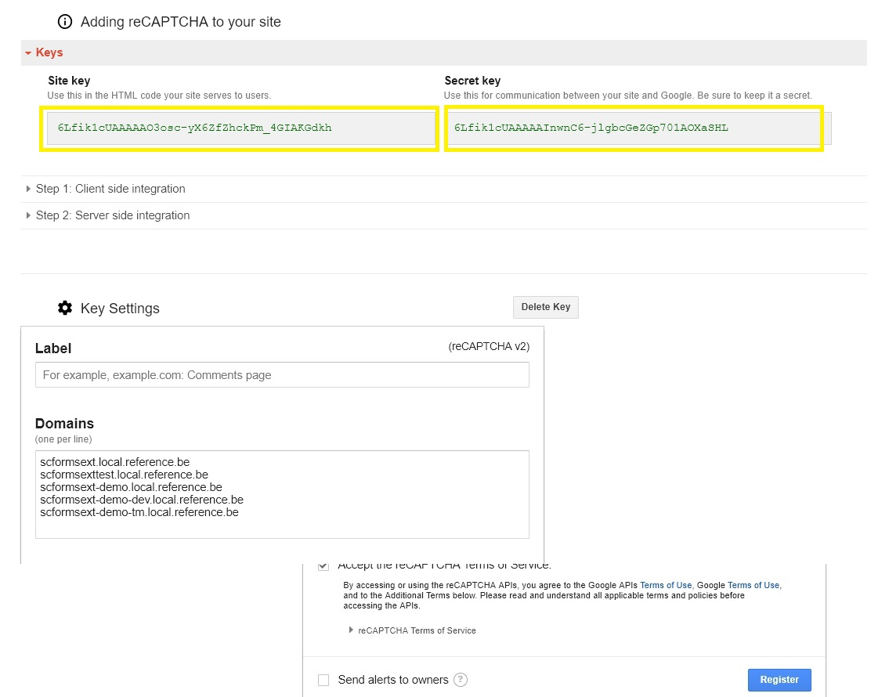

Configure Google Captcha v2¶
Setup Google Account¶
First we need to configure our account in Google Recaptcha Portal.
https://www.google.com/recaptcha/admin#list

Add Config File to your Solution¶
Create a file Feature.FormsExtentions.GoogleRecaptcha.config and add it in your website folder under App_Config/Environment
<?xml version="1.0"?>
<configuration xmlns:patch="http://www.sitecore.net/xmlconfig/" xmlns:role="http://www.sitecore.net/xmlconfig/role/">
<sitecore role:require="Standalone or ContentManagement or DedicatedDispatch">
<settings>
<setting name="GoogleCaptchaPublicKey" value="6Lfik1cUAAAAAO3osc-yX6ZfZhckPm_4GIAKGdkh" />
<setting name="GoogleCaptchaPrivateKey" value="6Lfik1cUAAAAAInwnC6-jlgbcGeZGp701AOXaSHL" />
</settings>
</sitecore>
</configuration>
The setting “GoogleCaptchaPublicKey” should contain the site key.
The setting “GoogleCaptchaPrivateKey” should contain the secret key.
